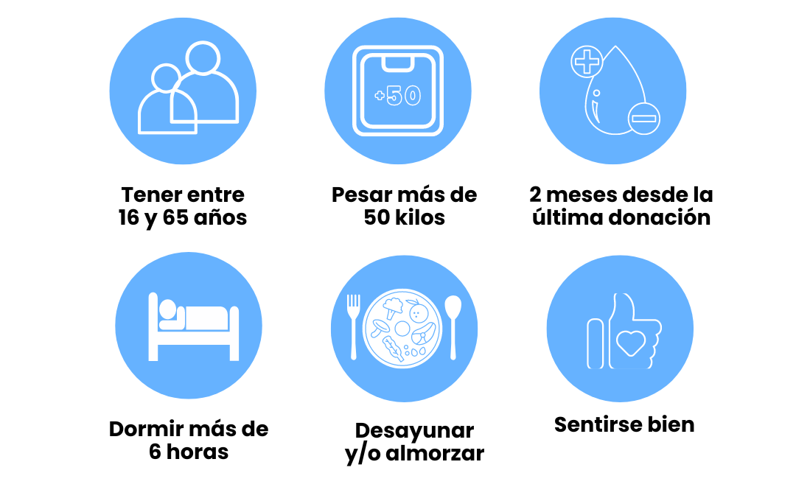

Requisitos para donar sangre

Preguntas Frecuentes
La sangre donada se utiliza en transfusiones para pacientes que han sufrido accidentes graves, tienen enfermedades crónicas, se someten a cirugías o tienen trastornos sanguíneos.
La extracción en sí dura entre 5 y 10 minutos. Sin embargo, toda la consulta dura entre 30 y 40 minutos ya que el personal médico tiene que revisar a los donantes antes de la extracción.
Se puede donar sangre con un intervalo mínimo de 2 meses. Las personas que menstrúan pueden donar 3 veces por año, y las que no, 4 veces por año. Esto se debe a que los depósitos de hierro y la hemoglobina se ven mermados mensualmente con la menstruación.
No. El material que se usa para la extracción es estéril, descartable, y de uso único. No se puede contagiar ninguna enfermedad por donar sangre.
El piercing podría ser aceptado cuando se realiza en un lugar donde se utilizan la propia pieza, estéril, para perforar y bajo la responsabilidad de un profesional matriculado. Deben excluirse durante, al menos, 6 meses los donantes con tatuajes y piercing no realizados en las condiciones antes citadas. Todos estos procedimientos son considerados de riesgo porque con frecuencia son realizados en condiciones poco higiénicas, sin una correcta esterilización, con reutilización de las agujas de uso único, de tintas, etc.
Sí. Sin embargo, para evitar mareos, se recomienda no fumar en las dos horas posteriores a la donación.
Para donar sangre, generalmente debes encontrar un centro de donación de sangre o una unidad móvil de donación en tu área. Puedes comunicarte con organizaciones locales de donación de sangre, hospitales o instituciones médicas para obtener información sobre dónde y cuándo se pueden realizar donaciones.
Sí, donar sangre es seguro siempre y cuando se realice en un entorno adecuado y por personal capacitado. Los centros de donación de sangre siguen rigurosas medidas de seguridad y esterilización para garantizar la seguridad tanto del donante como del receptor.
El organismo recupera el volumen de la sangre donada en menos de 24 horas. Durante ese tiempo se recomienda no hacer ejercicio físico.
Si tienes dudas, puedes dejar tu mensajes AQUÍ y nos pondremos en contacto para poder ayudarte.
Si querés informarte mejor Click Aquí